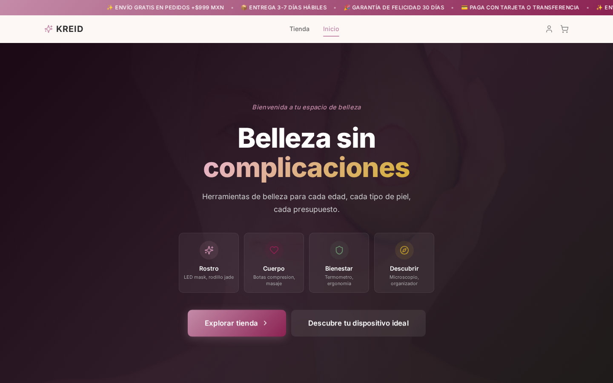
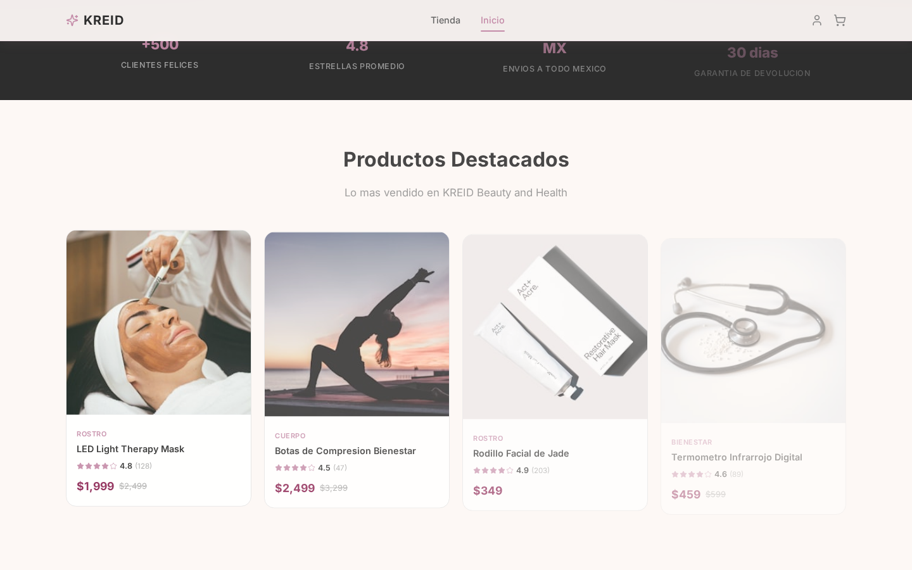
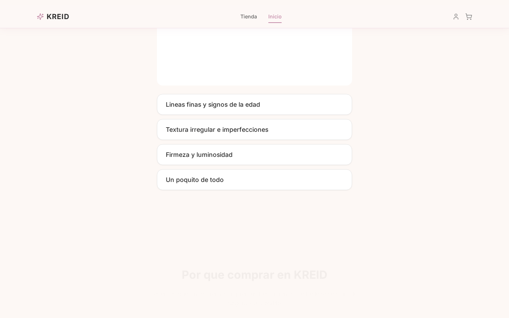

KREID es una plataforma de comercio electrónico enfocada en categorías de alta demanda en el mercado mexicano. Opera bajo un modelo de venta multicanal que integra TikTok Shop como canal principal de conversión, complementado con tienda propia y presencia en marketplaces.
El enfoque está en categorías con ventanas de oportunidad comprobadas: mercados donde la competencia es baja o fragmentada, el ticket es atractivo, y el público objetivo ya está presente en las plataformas seleccionadas.
| Métrica | Meta |
|---|---|
| Margen bruto por venta | ≥ 60% después de comisiones de plataforma y envío |
| CAC (costo de adquisición por cliente) | ≤ $150 MXN |
| ROAS (retorno sobre inversión publicitaria) | ≥ 2.5× sostenido |
| Tasa de conversión | ≥ 3% en TikTok Shop, ≥ 2% en web propia |
Se realizó una auditoría de mercado en Amazon México abarcando 8 categorías y ~60 subcategorías. Cada una fue evaluada con datos de reviews reales, número de competidores y tendencia de crecimiento. A continuación se presentan los nichos con mayor potencial, organizados por categoría.
| Subcategoría | Estado | Observación |
|---|---|---|
| Dispositivos de terapia lumínica facial | VIABLE [2] | 2 marcas activas. Crecimiento mensual constante. Ticket medio-alto. |
| Dispositivos de microcorriente | SATURADO | Marca dominante con +1,900 reviews. Barrera de entrada alta. |
| Cosméticos y consumibles | SATURADO | 5+ canales establecidos. Marcas multinacionales. |
| Subcategoría | Estado | Observación |
|---|---|---|
| Botas de compresión para piernas | VIABLE [1] | 12+ productos, 0-113 reviews. Ticket $1,300-$10,000. |
| Rodillos de fascia | VIABLE [2] | Mercado fragmentado sin marca dominante. Ticket accesible. |
| Pistolas de masaje | SATURADO | Marca líder con +19,000 reviews. Mercado tomado. |
| Subcategoría | Estado | Observación |
|---|---|---|
| Organizadores de nevera (acero) | VIABLE [2] | Genéricos 0-18 reviews. Marcas premium saturadas. |
| Especieros y estantes magnéticos | VIABLE [2] | Marcas pequeñas 0-27 reviews. Sin líder claro. |
| Ganchos magnéticos | SATURADO | Marca líder con +700 reviews. |
| Subcategoría | Estado | Observación |
|---|---|---|
| Kits de ciencia (marcas económicas) | VIABLE [1] | 34-97 reviews. Marcas premium con +17,000 reviews son otro segmento. |
| Microscopios infantiles | VIABLE [2] | Marcas pequeñas 0-17 reviews. Oportunidad clara. |
| Bloques magnéticos (gama media) | VIABLE [2] | 11-49 reviews por marca. Gama alta saturada. |
| Subcategoría | Estado | Observación |
|---|---|---|
| Termómetros infrarrojos (Industrial) | VIABLE [2] | 79 reviews totales en la categoría. Baja competencia. |
| Reposamuñecas ergonómicos (Oficina) | VIABLE [2] | 1-8 reviews. Mercado casi inexistente. |
| Organizadores de cajuela (Automotriz) | VIABLE [1] | 22 reviews. Sin marca dominante. |
| Confianza | Viable | Ajustado | Descartado |
|---|---|---|---|
| 2+ fuentes independientes | 8 | 0 | 4 |
| 1 fuente | 4 | 4 | 5 |
| Total subcategorías | 12 | 4 | 9 |
TikTok Shop es el eje de la estrategia de venta. Permite transacciones nativas sin que el usuario salga de la aplicación, lo que reduce drásticamente la fricción de compra. El contenido orgánico (videos demostrativos, lives) se convierte directamente en ventas atribuibles.
Plataforma independiente que funciona como hub central del catálogo y destino para tráfico de anuncios (Meta Ads). Construida con tecnología moderna para maximizar velocidad de carga y conversión.
TikTok Shop México tiene la siguiente estructura de costos para vendedores:
| Concepto | Tarifa | Notas |
|---|---|---|
| Comisión de plataforma | 5% – 8% | Varía por categoría. Belleza ~6%. La más baja entre plataformas. |
| Tarifa fija por transacción | $6.00 MXN | Se cobra por cada orden, sin importar el monto. Equivale a ~$0.30 USD. |
| Procesamiento de pago | Incluido en comisión | TikTok procesa el pago con su propia pasarela; no hay % adicional. |
| Envío (FBT) | Variable | Si se usa Fulfillment by TikTok. Opcional. Rango ~$40-$80 MXN. |
| Afiliados/creadores | 1% – 20% | Opcional. Comisión que se ofrece a creadores por promover productos. |
| Concepto | Tarifa |
|---|---|
| Tarjetas de crédito/débito | 2.99% + IVA |
| Pago en Oxxo y efectivo | ~3.5% + IVA |
| Meses sin intereses | Varía por plan (5-12%) |
| Transferencias SPEI | Sin costo |
| Canal | Costo por venta | Tráfico | Rol |
|---|---|---|---|
| TikTok Shop | ~6-7% | Orgánico + pagado | Conversión principal |
| Tienda Web + Mercado Pago | ~3.5% | Pagado (Meta Ads) | Hub + remarketing |
| Mercado Libre | ~14.5% | Orgánico (búsqueda) | Complementario |
| Instagram/Facebook Shop | ~3.5% (vía web) | Orgánico + pagado | Tráfico a web |
TikTok Shop es una funcionalidad nativa de TikTok que permite vender productos directamente dentro de la aplicación. No requiere redirección a un sitio externo: el usuario ve un video, toca el producto, y completa la compra sin salir de TikTok.
La tienda web está construida como una aplicación de una sola página (SPA) con renderizado ultrarrápido. La arquitectura se diseñó bajo tres principios: velocidad de carga (crítica para conversión en México donde predomina el tráfico móvil en redes 4G), experiencia visual envolvente (animaciones fluidas, scroll narrativo), y despliegue serverless (sin costo de servidor fijo, escala automático con el tráfico).
| Capa | Tecnología | Justificación |
|---|---|---|
| Interfaz de usuario | React 19 | Framework más usado, enorme ecosistema de librerías, renderizado eficiente |
| Empaquetado | Vite 6 | Dev server instantáneo, builds optimizados, HMR en milisegundos |
| Estilos | Tailwind CSS | Utilidades atómicas que no generan CSS muerto, personalizable por diseño |
| Animaciones | Framer Motion + GSAP | Animaciones declarativas en React + control preciso de timeline para scroll |
| Base de datos | Supabase (PostgreSQL) | PostgreSQL administrado con API REST/WebSocket, auth incluido, gratuito para arranque |
| Pagos | Mercado Pago | Checkout integrado con todos los medios de pago mexicanos |
| Despliegue | Vercel | CDN global, deploy desde git, serverless functions, dominio personalizado |
La tienda fue diseñada bajo el concepto de "dopamina e-commerce": una experiencia visual que mantiene al usuario explorando. En lugar de una cuadrícula estática de productos, la página narra un recorrido con animaciones al hacer scroll, secciones que revelan contenido progresivamente, y micro-interacciones que hacen sentir la navegación fluida y premium.

El home está compuesto por secciones narrativas en este orden:


| Ruta | Función |
|---|---|
/products | Catálogo completo con búsqueda en tiempo real, filtros por categoría y precio, ordenamiento |
/products/:id | Detalle de producto con galería de imágenes, especificaciones, reseñas y productos relacionados |
/cart | Carrito persistente que sobrevive recargas. Calcula envío gratis automático sobre cierto monto |
/checkout | Proceso de pago con integración a Mercado Pago |
/account | Panel del cliente: historial de órdenes expandibles, datos de envío, seguimiento |
/dashboard | Panel administrativo: analytics de ventas, gestión de productos, órdenes, alertas de stock |